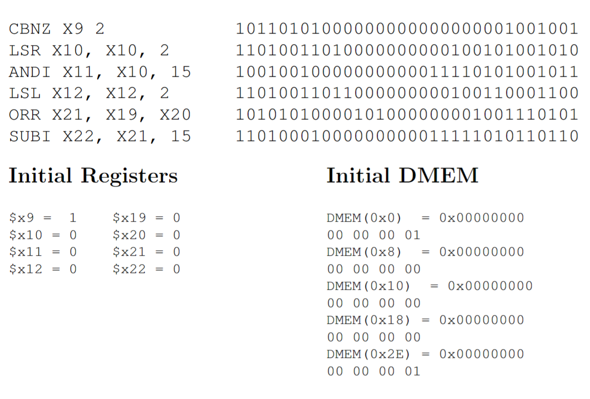

In my Computer Organization course, I was tasked with desgining a five stage pipelined processor using VHDL. The processor runs on a small subset of the LEGv8 instruction set and is capable of structural and data hazard resolution with forwarding and stalling. We were given a set of instructions to test the processor on and were able to verify the functionality of the processor by viewing the waveforms generated by the test bench.
An example program has been provided below. The program is a relatively simple series of the LEGV8 instructions. The program is designed to test the functionality of the processor and ensure that not only are values being passed correctly between registers, but also that the correct values are being forewarded when there are data hazards.
The processor was, in general, designed to follow this schematic. However, due to the complexity of the forwarding and pipelining logic, some alterations were made to the design. Specifically, there needed to be an extra or gate to handle unconditional branches and extra multiplexers to handle some of the forwarding logic. A high level diagram of the processor architecture along with details on each pipeline stage is shown below.
Instruction Fetch: An instruction is fetched from the instruction memory module and passed to the IF/ID pipeline register. The PC is then incremented by 4 to point to the next instruction. Depending on whether a branch instruction is executed, the PC may increment by a different amount.
Instruction Decode: The different components of the 32 bit field are sent to their respective modules. The ALU control sets internal flags, and along with the hazard detection unit, signals are sent out to instruct components on where their input data should come from. Relevent information is also taken from the register file, and all data is passed into the ID/EX pipeline register.
Execution Stage: All ALU operations are performed in this stage. However, depending on whether a data dependency is detected, or if the instruction uses an immediate value, the ALU may take its input from any input from a multiplexer. The forwarding unit also executes in this stage, resolving any data dependencies that may exist. Finally, branches are resolved in this stage, and all outputs enter the EX/MEM register.
Memory Stage: The memory stage is where all data is fetched or stored from memory. Outputs from the ALU and register file are passed to the data memory module, where the data is either read or written. Finally, the data is both passed into the MEM/WB register and forwarded back to the ALU for any data dependencies that may exist.
Write Back Stage: In the write back stage, the output of an instruction is written back to the register file. The data is taken from either the ALU or data memory.